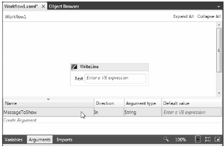
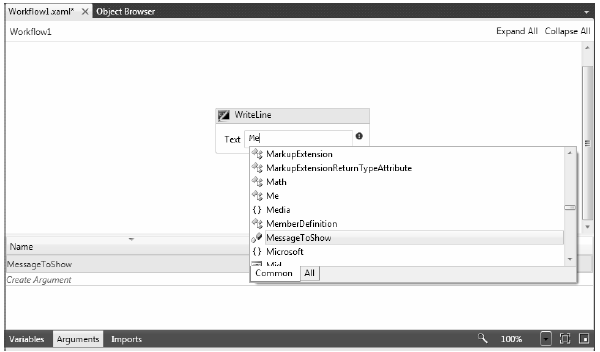

The next thing to understand is that the WF API also consists of a runtime engine to load, execute, unload, and in other ways manipulate a workflow which you have defined. The WF runtime engine can be hosted within any .NET application domain; however, be aware that a single application domain can only have one running instance of the WF engine.
Recall from Chapter 16 that an AppDomain is a partition within a Windows process that plays host to a .NET application and any external code libraries. As such, the WF engine can be embedded within a simple console program, a GUI desktop application (Windows Forms or WPF), or exposed from a Windows Communication Foundation (WCF) service.
Note The WCF Workflow Service Application project template is a great starting point if you wish to build a WCF service (see Chapter 25) that makes use of workflows internally.
If you are modeling a business process that needs to be used by a wide variety of systems, you also have the option of authoring your WF within a C# Class Library project of a Workflow Activity Library project. In this way, new applications can simply reference your *.dll to reuse a predefined collection of business processes. This is obviously helpful in that you would not want to have to re-create the same workflows multiple times.
The host process of the WF runtime can interact with said runtime using a few different techniques. The simplest way to do so is to use the WorkflowInvoker class of the System.Activities namespace. This class allows you to start a workflow using a single line of code. If you were to open up the Program.cs file of your current Workflow Console Application project, you will see the following Main() method:
static void Main(string[] args) { WorkflowInvoker.Invoke(new Workflow1()); }
Using the WorkflowInvoker is very useful when you simply want a workflow to kick off and don’t care to monitor it any further. The Invoke() method will execute the workflow is a synchronous blocking manner. The calling thread is blocked until the entire workflow has finished or has been terminated abruptly. Because the Invoke() method is a synchronous call, you are guaranteed that the entire workflow will indeed complete before Main() is terminated. In fact, if you were to add any code after the call to WorkflowInvoker.Invoke(), it will only execute when the workflow is completed (or in a worse case situation, terminated abruptly):
static void Main(string[] args) { WorkflowInvoker.Invoke(new Workflow1()); Console.WriteLine("Thanks for playing"); }
When a host process kicks off a workflow, it is very common for the host to send custom startup arguments. For example, assume that you wish to let the user of your program specify which message to display in the WriteLine activity in place of the currently hard-coded text message. In normal C# code, you might create a custom constructor on a class to receive such arguments. However, a workflow is always created using the default constructor! Moreover, most workflows are defined only using XAML, not procedural code.
As it turns out, the Invoke() method has been overloaded multiple times, one version of which allows you to pass in arguments to the workflow when it starts. These arguments are represented using a Dictionary<string, object> variable that contains a set of name/value pairs that will be used to set identically named (and typed) argument variables in the workflow itself.
To define the arguments that will capture the incoming dictionary data, you will make use of the workflow designer. In Solution Explorer, right-click Workflow1.xaml and select View Designer. Notice on the bottom of the designer there is a button named Arguments. Click this button now, and from the resulting UI, add an input argument of type String named MessageToShow (no need to assign a default value for this new argument). As well, delete your initial message from the WriteLine activity. Figure 26-5 shows the end result.
Figure 26-5 Workflow arguments can be used to receive host supplied arguments
Now, in the Text property of the WriteLine activity, you can simply enter MessageToShow as the evaluation expression. As you are typing in this token, you’ll notice IntelliSense will kick in (Figure 26-6).
Figure 26-6 Using a custom argument as input to an activity
Now that you have the correct infrastructure in place, consider the following update to the Main() method of the Program class. Note that you will need to import the System.Collections.Generic namespace into your Program.cs file to declare the Dictionary<> variable.
static void Main(string[] args) { Console.WriteLine("***** Welcome to this amazing WF application *****"); // Get data from user, to pass to workflow. Console.Write("Please enter the data to pass the workflow: "); string wfData = Console.ReadLine(); // Package up the data as a dictionary. Dictionary<string, object> wfArgs = new Dictionary<string,object>(); wfArgs.Add("MessageToShow", wfData); // Pass to the workflow. WorkflowInvoker.Invoke(new Workflow1(), wfArgs); Console.WriteLine("Thanks for playing"); }
Again, it is important to point out that the string values for each member of your Dictionary<> variable will need to be identically named to the related argument variable in your workflow. In any case, you will find output similar to the following when you run the modified program:
***** Welcome to this amazing WF application ***** Please enter the data to pass the workflow: Hello Mr. Workflow! Hello Mr. Workflow! Thanks for playing Press any key to continue . . .
Beyond the Invoke() method, the only other really interesting members of WorkflowInvoker would be BeginInvoke() and EndInvoke(), which allow you to start up the workflow on a secondary thread using the .NET asynchronous delegate pattern (see Chapter 19). If you require more control over how the WF runtime manipulates your workflow, you can instead make use of the WorkflowApplication class.
You’ll want to use WorkflowApplication (as opposed to WorkflowInvoker) if you need to save or load a long running workflow using WF persistence services, be notified of various events which fire during the lifetime of your workflow instance, work with WF “bookmarks,” and other advanced features.
If you have a background in the previous version of the WF API, use of WorkflowApplication will look familiar to using the .NET 3.5 WF WorkflowRuntime class, in that you will need to call the Run() method to start the workflow instance.
When you do call Run(), a new background thread will be plucked from the CLR thread pool. Therefore, if you do not add additional support to ensure the main thread waits for the secondary thread to complete, the workflow instance may not have a chance to finish its work!
One way to make sure the calling thread waits long enough for the background thread to finish its work is to use an AutoResetEvent object of the System.Threading namespace. (In fact, this is what the .NET 3.5 workflow starter code made use of.) Here is an update to the current example, which now uses WorkflowApplication rather than WorkflowInvoker:
static void Main(string[] args) { Console.WriteLine("***** Welcome to this amazing WF application *****"); // Get data from user, to pass to workflow. Console.Write("Please enter the data to pass the workflow: "); string wfData = Console.ReadLine(); // Package up the data as a dictionary. Dictionary<string, object> wfArgs = new Dictionary<string,object>(); wfArgs.Add("MessageToShow", wfData); // Used to inform primary thread to wait! AutoResetEvent waitHandle = new AutoResetEvent(false); // Pass to the workflow. WorkflowApplication app = new WorkflowApplication(new Workflow1(), wfArgs); // Hook up an event with this app. // When I’m done, notifiy other thread I’m done, // and print a message. app.Completed = (completedArgs) => { waitHandle.Set(); Console.WriteLine("The workflow is done!"); }; // Start the workflow! app.Run(); // Wait until I am notified the workflow is done. waitHandle.WaitOne(); Console.WriteLine("Thanks for playing"); }
The output will be similar to the previous iteration of the project:
***** Welcome to this amazing WF application ***** Please enter the data to pass the workflow: Hey again! Hey again! The workflow is done! Thanks for playing Press any key to continue . . .
The benefit of using WorkflowApplication is you can hook into events (as you have done indirectly using the Completed property here) and can also tap into more sophisticated services (persistence, bookmarks, etc).
For this introductory look at WF 4.0, we will not dive into the details of these runtime services. Be sure to check out the .NET Framework 4.0 SDK documentation for details regarding the runtime behaviors and services of the Windows Workflow Foundation 4.0 runtime environment.
Note In addition to WorkflowInvoker and WorkflowApplication, you can also start and monitor a workflow instance using WorkflowServiceHost. This class supports features like messaging activities, multi-instancing, and configuration. If your workflow-enabled WCF service is under IIS, WorkflowServiceHost is used automatically.
That wraps up your first look at WF 4.0. While this example was very trivial, you did learn a few interesting (and useful) tasks. First, you learned that you can pass in a Dictionary object which contains name/value pairs that will be passed to identically named arguments in your workflow. This is really useful when you need to gather user input (such as a customer ID number, SSN, name of a Doctor, etc) which will be used by the workflow to process its activities.
You also learned that a .NET 4.0 workflow is defined in a declarative manner (by default) using an XML-based grammar named XAML. Using XAML, you can specify which activities your workflow contains. At runtime, this data will be used to create the correct in-memory object model. Last but not least, you looked at two different approaches to kick off a workflow using the WorkflowInvoker and WorkflowApplicaion classes.
Source Code The FirstWorkflowExampleApp project is included under the Chapter 26 subdirectory.